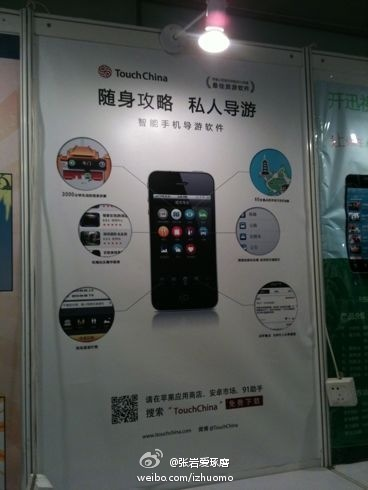

回想起来当年“莽撞”的几件事情，感觉就是： 在自己权益受到损害，或者感觉受到侮辱的时候，拒绝息事宁人的态度。我至今不懊悔当时做了回击的举动，而懊悔的统统是那些做恶者当时没有受到惩罚。

Ada李力
2012-05-09
Ada李力
2012-05-09
有件关于孩子的“丑事”。曾带四岁时姣姣开电瓶车在操场上玩，三个七八岁小男孩想坐，姣姣不肯。男孩子于是往姣姣身上扔草和扔土，我警告，再扔就揍他们。仍旧扔，姣姣大哭，于是我就满操场追那三孩子，逮住一个揍几下屁股，然后去抓另外的...... 当时像个疯婆子，也不管男孩子的妈妈就在附近。
Ada李力
2012-05-09
才注意到方舟子对韩寒的打假，方粉和韩粉都人数众多，互相攻击，有夫妻双方为挺方还是挺寒争论而导致了离婚的案件。这个在文革中有先例的，我舅妈和大姨互不理睬，处于老死不相往来的状态。最早原因就是舅妈是造反派，大姨是保皇派。在晚辈看来，真是相当的不值得。但历史总是会重演的。


Ada李力
2012-05-09
Joey是高富帅啊，广而告之。 //@Byford亲启: 我只能说你太幸福了！ //@孔霸天:哈哈！我有三个老板，高富帅是@沈卓立TouchChina 屌丝是@Byford亲启 文艺青年@薛文丞JamesSit 粘板子这种事当然是屌丝老板去做了！
//@Byford亲启: 我只能说你太幸福了！ //@孔霸天:哈哈！我有三个老板，高富帅是@沈卓立TouchChina 屌丝是@Byford亲启 文艺青年@薛文丞JamesSit 粘板子这种事当然是屌丝老板去做了！
- 